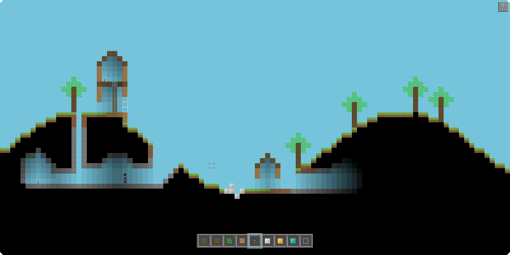

Minecraft 2D is a singleplayer flash game based on Minecraft developed by Mojang.

It is completely written from scratch, and doesn't include any code from the official game.
Upon developing Minecraft 2D, I strifed to keep the Essential Requirements as stated by Mojang.
Thus Minecraft 2D tries
- NOT to make people think that I or what I am doing is official; approved or endorsed by Mojang; or associated or connected with Mojang;
- NOT to be unlawful, deceptive, obscene, harmful or disparaging;
- NOT to adversely affect the Minecraft Brand or Minecraft Assets;
- NOT to include anything else around it that makes people think that I or what I am doing is official; approved or endorsed by Mojang; or associated or connected with Mojang;
- to comply with the Minecraft terms;
- to sufficiently differentiate the use of the Minecraft Name from any other branding
If you think any of the above have been violated in publicing this game, don't hesitate to bring it to my attention!